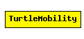

File: Mobility/TurtleMobility.ned
C++ definition: click here
A LOGO-style movement model, with the script coming from XML. It can be useful for describing random as well as deterministic scenarios.
First, a few examples.
Node will move along a square's borders:
<movement>
<set speed="10" angle="180"/>
<repeat n="4">
<forward d="50"/>
<turn angle="90"/>
</repeat>
</movement>
MassMobility (in which the node is assumed to have a mass, and cannot turn abruptly):
<movement>
<repeat>
<set speed="uniform(10,20)"/>
<turn angle="uniform(-30,30)"/>
<forward t="uniform(0.1,1)"/>
</repeat>
</movement>
Random Waypoint:
<movement>
<repeat>
<set speed="uniform(20,60)"/>
<moveto x="uniform(0,$MAXX)" y="uniform(0,$MAXY)"/>
</repeat>
</movement>
Commands (XML element names) are: repeat, set, forward, turn, wait, moveto, and moveby.
Accepted attributes:
Attribute values can be literal numbers (e.g. x="100"), or any distribution accepted in omnetpp.ini (e.g. speed="uniform(10,20)"). A new value will be chosen each time the statement is executed. The $MAXX and $MAXY strings will be substituted with the playground width and height minus 1, respectively.
t is time interval, calculated from the end of the previous movement. x, y are absolute coordinates with <set> and <moveto>, and relative with <moveby>. angle is clockwise in degrees, with 0 pointing west. d is distance in meters (speed is m/s).
borderPolicy controls what happens when a node reaches the edge of the playground, and can take one of the values "reflect", "wrap", "placerandomly". In the first case, the node reflects off the wall; with "wrap", it'll come in on the other side (torus); and with "placerandomly", it will be placed at a random position on the playground.
In addition to the node position, the module maintains two interval variables, 'speed' and 'angle', which can be adjusted by <set> and <turn>. The <forward> statement, if only t or d is given, uses the speed variable. If you specify d and t together, that determines speed as well, so the speed variable will be ignored completely.
Likewise, <moveto> and <moveby> will ignore the angle variable, and will only use the speed variable if the t attribute is omitted.
If the repeat count n is omitted for the <repeat> statement, that means an infinite loop.
You can find the DTD with the sources: TurtleMobility.dtd.
See also: ChannelControl
Author: Andras Varga
The following diagram shows usage relationships between modules, networks and channels. Unresolved module (and channel) types are missing from the diagram. Click here to see the full picture.
| Name | Type | Description |
|---|---|---|
| debug | bool | debug switch |
| turtleScript | xml | describes the movement |
| updateInterval | numeric const | time interval to update the hosts position |
simple TurtleMobility parameters: debug : bool, // debug switch turtleScript: xml, // describes the movement updateInterval : numeric const; // time interval to update the hosts position endsimple